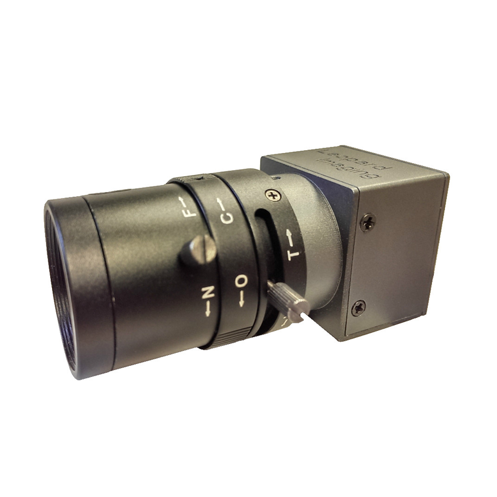

Guide for LI-USB30-AZ023WDRB
The cameras used are LI-USB30-AR023ZWDR with standard USB 3.0 case manufactured by Leopard Imaging Inc. This line of product is based on AZ023Z 1080P sensor and AP0202 ISP from ON Semiconductor. It supports external trigger and software trigger.
We recommend using two cameras with 6 mm lens and one with 25 mm lens to achieve the required performance for traffic light detection application.

This camera can be connected to the IPC through USB 3.0 cable for power and data communication. External trigger signal can be sent into the camera via the HR25-7TP-8P(72) connector. A firmware change would also be needed to enable external trigger. For more detail on external triggers, please contact Leopard Imaging Inc. for more instructions.
Reference
You can find additional information regarding the Leopard Imaging Inc. cameras on their website
Disclaimer
This device is Apollo Platform Supported